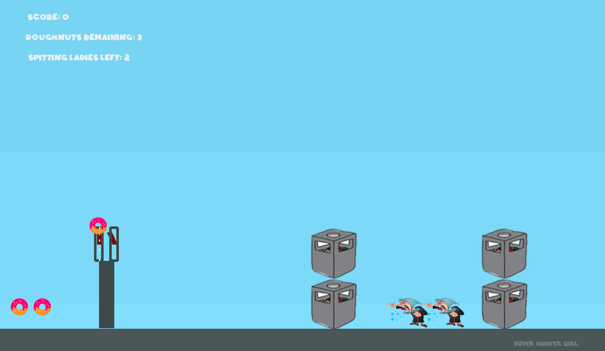

Super Painter Girl
This was a silly game I made for my wife using PyGame. Unfortunately, there is no way to host games written in PyGame on a browser, so it’s not easy to share. But I’ll make and web-host some ‘Super Painter Girl’ installments using PICO-8 at some point. Until then, here are some screenshots.
